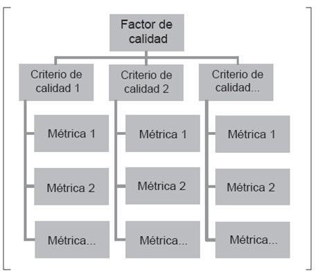
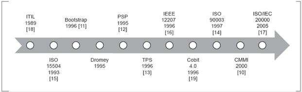
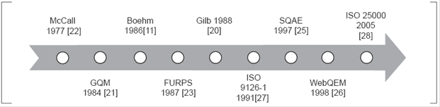
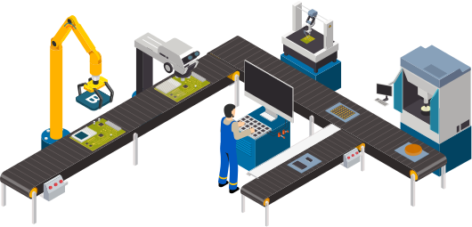
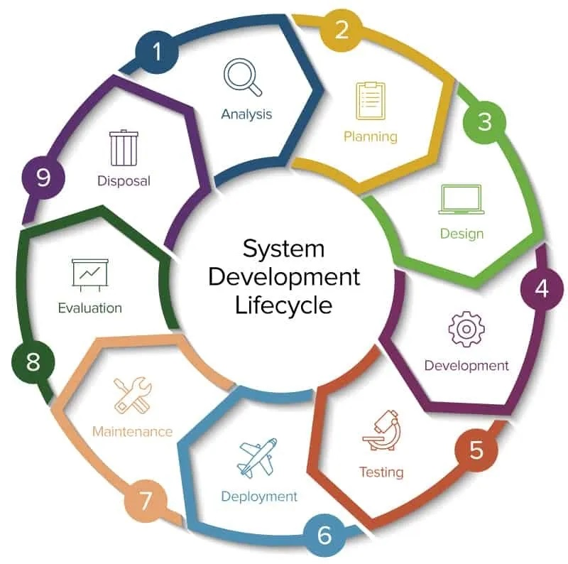

Modelo de calidad
Los documentos de calidad son aquellos que integran la mayoría de las mejores prácticas, presentan temas de gestión en los modelos que toda organización debe enfatizar, integran diferentes prácticas que se enfocan en procesos clave y permiten medir el progreso de la calidad.
Estructura y enfoque de los modelos de calidad de software
Los modelos de calidad de software generalmente están estructurados como se muestra en la siguiente imagen:

Donde se pueden tener diversos factores de calidad que a su vez se componen de criterios que son evaluados por métricas, con el propósito de abordar la evaluación desde lo general a lo particular, y permitir la reducción de la subjetividad en la asignación de un valor, ya sea cuantitativo o cualitativo.
Así mismo, los modelos de calidad de software se clasifican de acuerdo con el enfoque de evaluación, ya sea a nivel de proceso, producto o calidad en uso.
Calidad a nivel de proceso
La calidad de un sistema software debe ser programada desde el inicio del proyecto, y posteriormente en cada etapa del proceso de desarrollo se debe llevar a cabo el control y seguimiento de los aspectos de calidad, para minimizar los riesgos y ofrecer soporte continuo, se garantiza así un óptimo nivel de cumplimiento de los factores de calidad, teniendo en cuenta que si en alguna de las etapas se deja de lado la verificación de los factores y criterios es posible que se presente deficiencia en alguno de éstos y disminuirá el nivel de calidad no solo del proceso, sino también del producto en desarrollo.
Calidad a nivel de producto
La principal finalidad del modelo de calidad de producto es especificar y evaluar el cumplimiento de criterios del producto, para lo cual se aplican medidas internas y/o medidas externas (Bevan, 2010). Por esta razón, algunas normas y estándares han definido la calidad a nivel de producto en tres tipos: interna, externa y en uso (Rodríguez, 2016). Este enfoque está orientado a verificar el cumplimiento de las características que permitan alcanzar la satisfacción del cliente en cuanto a los requisitos definidos en las etapas iniciales del proceso de desarrollo.
Calidad en uso
Es importante resaltar que aunque en diferentes escenarios se utilizan los términos usabilidad y calidad en uso, con el mismo propósito y de forma intercambiable tienen significados distintos, principalmente porque el concepto de calidad en uso es más amplio y abarca más elementos que la usabilidad (Covella, 2005), y esta última es una de las características de calidad de un producto software. La calidad en uso se define como el "conjunto de atributos relacionados con la aceptación por parte del usuario final y seguridad", y está basada en la eficacia, productividad, seguridad y satisfacción, según ISO/IEC 9126.
Modelos a nivel de proceso

Modelos a nivel de producto

Ejemplos:
Bootstrap
Metodología de evaluación que permite la mejora de procesos a partir de seis actividades básicas: Examinar la necesidad, Iniciar proceso de mejora, preparación y dirección de la evaluación, análisis de resultados, implantación y finalización de mejoras.

Team Software Process (TSP)
TSP es la fase posterior de PSP, está diseñado para el trabajo de equipos de desarrollo de software autodirigidos, que se orienta al desarrollo de productos con el mínimo de defectos en tiempo y costos estimados. Cuenta con planes detallados y procesos como revisiones personales, inspecciones e índices de desempeño de calidad, y el fomento de la integración del equipo.

IEEE / EIA 12207
Este estándar establece un marco de trabajo común para el ciclo de vida del desarrollo de software, a partir del planteamiento de procesos, actividades y tareas que pueden ser aplicadas durante la adquisición, suministro, desarrollo, operación, mantenimiento y/o despliegue de un producto software (ISO/IEC, 2008).
